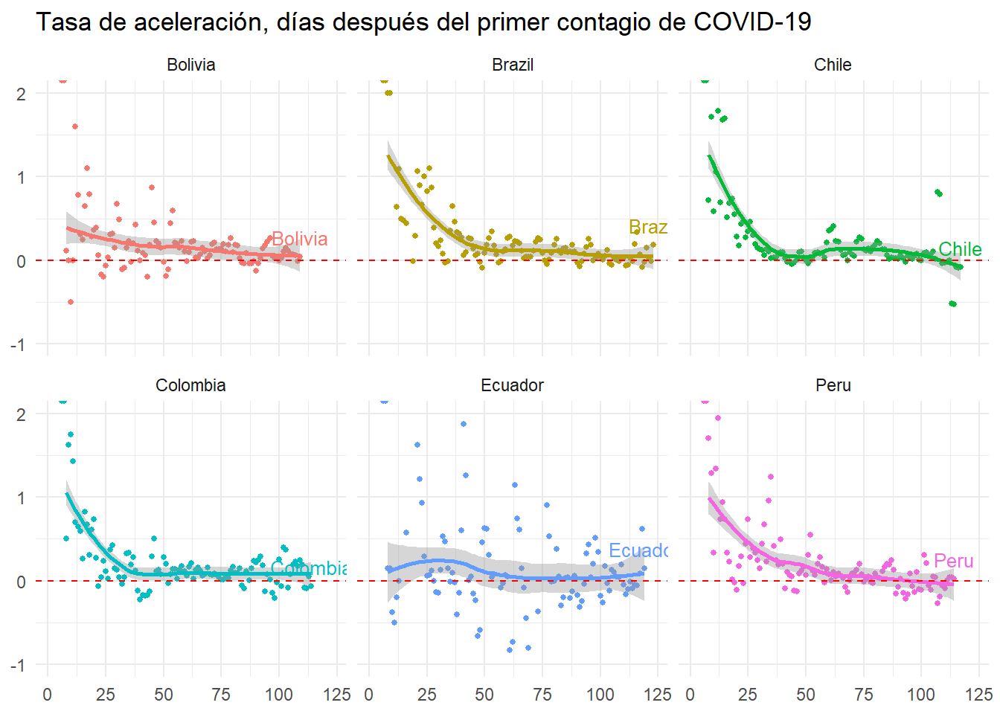
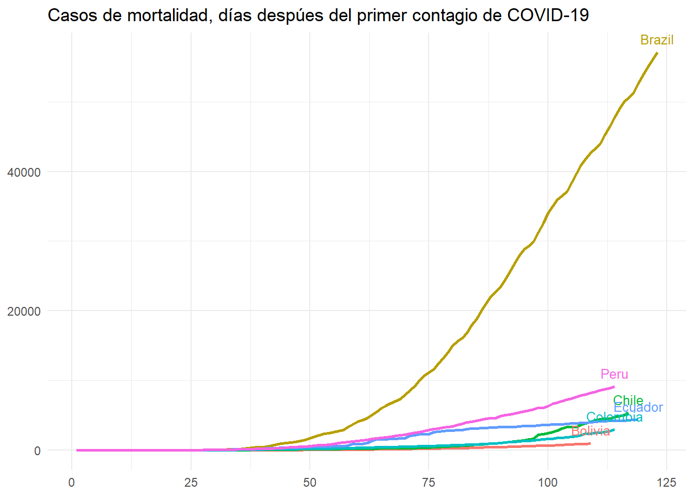
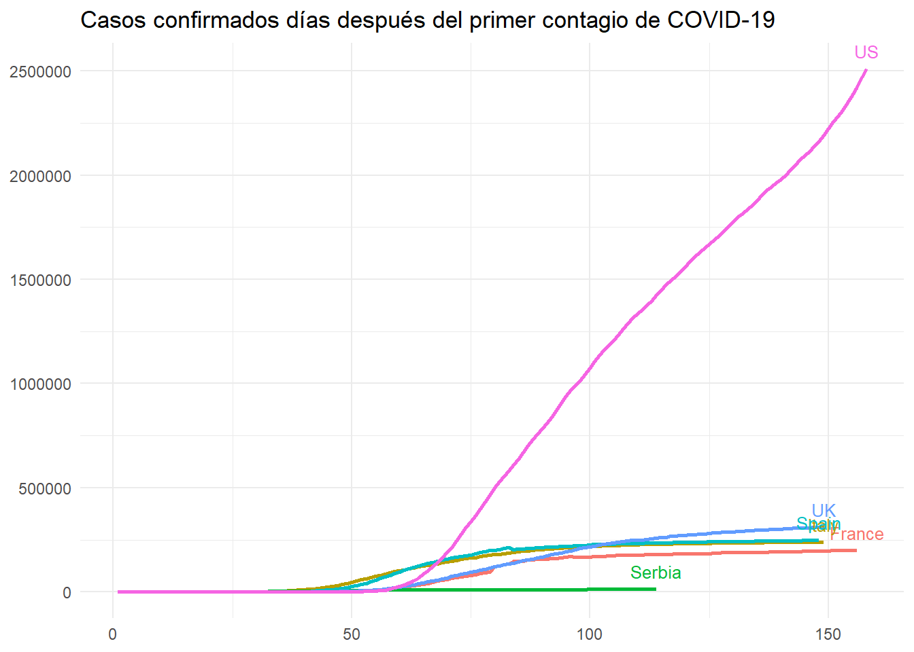

JD Website
Jorge David Morales
2020-04-24
COVID-19
Información tomada del GitHub de la Universidad Johns Hopkins, US:
https://github.com/CSSEGISandData/COVID-19/tree/master/csse_covid_19_data
## [1] "Fecha de último reporte: 2020-04-23"—————————————————————————————-
COVID-19 en la Región
—————————————————————————————-
| Report.Date | Country.Region | Confirmed | Recovered | Recov.Rate | Deaths | Death.Rate | Actives |
|---|---|---|---|---|---|---|---|
| 2020-04-23 | Brazil | 50,036 | 26,573 | 53.1% | 3,331 | 6.66% | 20,132 |
| 2020-04-23 | Peru | 20,914 | 7,422 | 35.5% | 572 | 2.74% | 12,920 |
| 2020-04-23 | Chile | 11,812 | 5,804 | 49.1% | 168 | 1.42% | 5,840 |
| 2020-04-23 | Ecuador | 11,183 | 1,328 | 11.9% | 560 | 5.01% | 9,295 |
| 2020-04-23 | Colombia | 4,561 | 927 | 20.3% | 215 | 4.71% | 3,419 |
| 2020-04-23 | Bolivia | 703 | 44 | 6.26% | 43 | 6.12% | 616 |
| Report.Date | Country.Region | Confirmed | New.Cases | Two.days.var | Five.days.var | New.Deaths | Deaths.var |
|---|---|---|---|---|---|---|---|
| 2020-04-23 | Brazil | 50,036 | 4,279 | 16.1% | 36.5% | 425 | 14.6% |
| 2020-04-23 | Peru | 20,914 | 1,664 | 17.3% | 45.0% | 42 | 7.92% |
| 2020-04-23 | Chile | 11,812 | 516 | 9.05% | 21.4% | 8 | 5.00% |
| 2020-04-23 | Ecuador | 11,183 | 333 | 7.55% | 24.0% | 23 | 4.28% |
| 2020-04-23 | Colombia | 4,561 | 205 | 9.93% | 32.6% | 9 | 4.37% |
| 2020-04-23 | Bolivia | 703 | 94 | 17.6% | 42.6% | 6 | 16.2% |


Tasa de variación de los casos acumulados en dos días. En el peor de los escenarios, un valor de 1
es indicativo de que cada dos días se duplican los casos confirmados.

Se estima que cuando la tasa de aceleración (Rolling Mean 6 days) empiece a ser negativa, habremos alcanzado
el pico de contagios y la curva de nuevos casos empezaría a descender.


—————————————————————————————-
COVID-19 en el mundo
—————————————————————————————-
| Report.Date | Country.Region | Confirmed | Recovered | Recov.Rate | Deaths | Death.Rate | Actives |
|---|---|---|---|---|---|---|---|
| 2020-04-23 | US | 869,170 | 80,203 | 9.23% | 49,954 | 5.75% | 739,013 |
| 2020-04-23 | Spain | 213,024 | 89,250 | 41.9% | 22,157 | 10.4% | 101,617 |
| 2020-04-23 | Italy | 189,973 | 57,576 | 30.3% | 25,549 | 13.4% | 106,848 |
| 2020-04-23 | France | 158,303 | 42,762 | 27.0% | 21,889 | 13.8% | 93,652 |
| 2020-04-23 | UK | 139,246 | 712 | 0.510% | 18,791 | 13.5% | 119,743 |
| 2020-04-23 | Serbia | 6,630 | 870 | 13.1% | 125 | 1.89% | 5,635 |
| Report.Date | Country.Region | Confirmed | New.Cases | Two.days.var | Five.days.var | New.Deaths | Deaths.var |
|---|---|---|---|---|---|---|---|
| 2020-04-23 | US | 869,170 | 28,819 | 7.06% | 18.7% | 3,332 | 7.15% |
| 2020-04-23 | Spain | 213,024 | 4,635 | 4.33% | 11.1% | 440 | 2.03% |
| 2020-04-23 | Italy | 189,973 | 2,646 | 3.27% | 7.99% | 464 | 1.85% |
| 2020-04-23 | France | 158,303 | 2,323 | 0.0854% | 6.90% | 516 | 2.41% |
| 2020-04-23 | UK | 139,246 | 4,608 | 6.97% | 20.8% | 640 | 3.53% |
| 2020-04-23 | Serbia | 6,630 | 0 | 0% | 10.6% | 0 | 0% |


Tasa de variación de los casos acumulados en dos días. En el peor de los escenarios, un valor de 1
es indicativo de que cada dos días se duplican los casos confirmados.

Se estima que cuando la tasa de aceleración (Rolling Mean 6 days) empiece a ser negativa, habremos alcanzado
el pico de contagios y la curva de nuevos casos empezaría a descender.